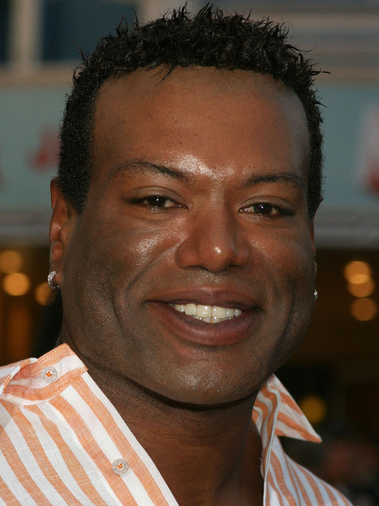
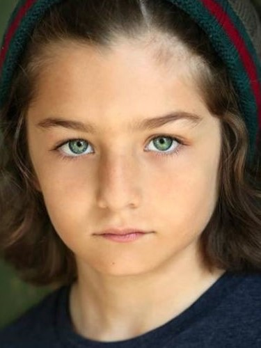
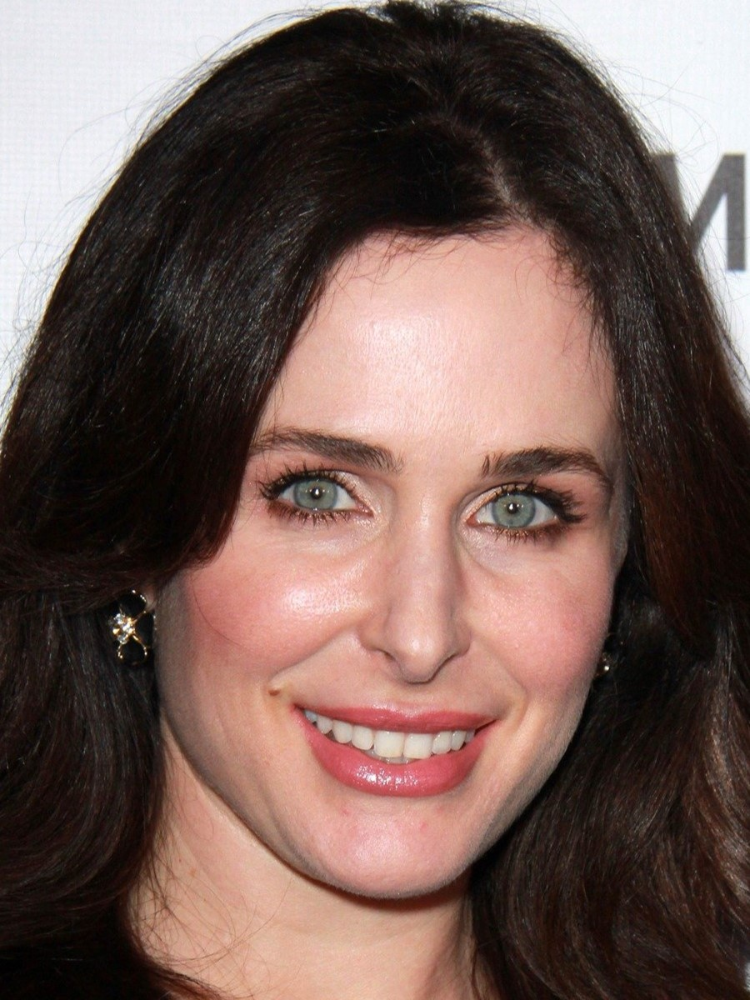
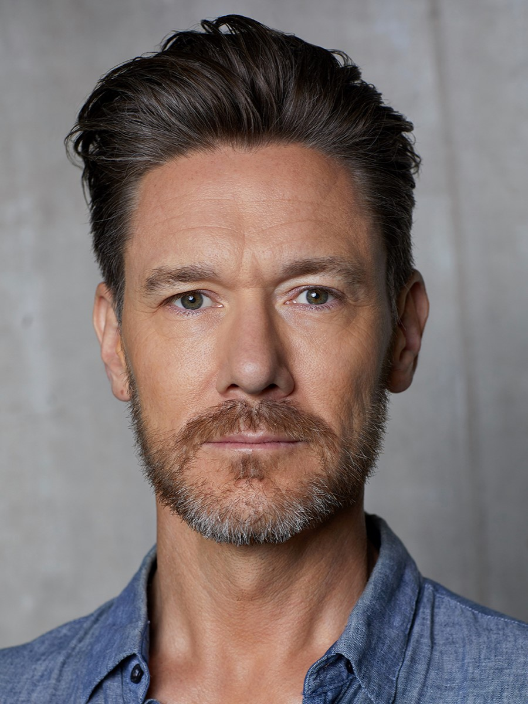

Information:
God Of War: Ragnarok
9.46
Rank:
#12
Popularity:
#239
Players:
5,153,265
Description:
God of War Ragnarök is an action-adventure game developed by Santa Monica Studio and published by Sony Interactive Entertainment. It was released worldwide on November 9, 2022, for the PlayStation 4 and PlayStation 5, marking the first cross-gen release in the God of War series. It is the ninth installment in the series, the ninth chronologically, and the sequel to 2018's God of War. Loosely based on Norse mythology, the game is set in ancient Scandinavia and features series protagonist Kratos and his teenage son Atreus. Concluding the Norse era of the series, the game covers Ragnarök, the eschatological event which is central to Norse mythology and was foretold to happen in the previous game after Kratos killed the Aesir god Baldur.The gameplay is similar to the previous 2018 installment. It features combo-based combat, as well as puzzle and role-playing elements. The gameplay has been revamped from the previous game: in addition to Kratos' main weapons, a magical battle axe and his double-chained blades, he also acquires a magical spear and his shield has become more versatile, with different types of shields that have differing offensive and defensive abilities. His son Atreus, as well as some other characters, provide assistance in combat and can be passively controlled. Additionally, and for the first time in the series, there are some story missions where the player takes full control of Atreus; his gameplay is similar to Kratos, but he uses his magical bow as his weapon. There are also more enemy types and mini-bosses than in the previous game.
Main characters:
Kratos
Christopher Judge
Atreus
Sunny Sljic
Freya
Danielle Bisutti
Mimir
Alastair Neil Duncan
Thor
Ryan Hurst
Tyr
Ben Prendergast
